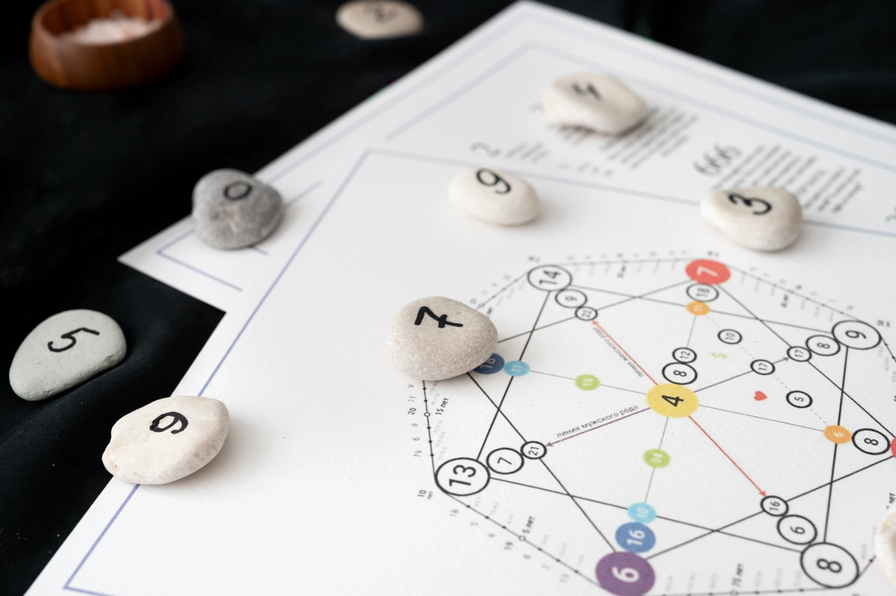

Статьи
Подборка материалов о разработке, алгоритмах и современных технологиях. Все статьи написаны простым языком, с примерами и иллюстрациями.
Поиск кратчайшего пути. Алгоритм Дейкстры своими руками
Пример реализации алгоритма Дейкстры на 1С:Элемент. Подробное объяснение идеи, структура графа, пошаговый поиск кратчайших путей и итоговые результаты.
Читать →Жадные алгоритмы. Как принимать решения “на лету”
Понимание и применение жадных алгоритмов: решения, которые строятся по мере поступления данных. Примеры на 1С:Элемент
Читать →Как машина учится на примерах. Обучение с учителем в действии
Учимся обучать модели: практическое введение в supervised learning с примерами на 1С:Элемент
Читать →Машинное обучение. Три подхода, которые стоит знать каждому разработчику
Статья и кодовые примеры, демонстрирующие базовые принципы машинного обучения. Включены три раздела: Обучение с учителем — классификация данных. Обучение без учителя — кластеризация объектов. Обучение с подкреплением — обучение через вознаграждения.
Читать →Алгоритмы сжатия данных. Как ZIP делает файлы меньше
Подробная статья и примеры кода на 1С:Элемент, объясняющие, как работают алгоритмы сжатия данных LZ77, Huffman и Deflate. Материал сочетает теорию и практику: показано, как ZIP-файлы уменьшают размер данных без потери информации.
Читать →Как работают поисковые алгоритмы. Binary Search, BFS и DFS
Статья по фундаментальным алгоритмам поиска: бинарный поиск (Binary Search), поиск в ширину (BFS) и поиск в глубину (DFS). Содержит понятные объяснения, визуальные аналогии, сравнительный анализ и рабочие примеры на языке 1С:Элемент
Читать →Динамическое программирование. Просто о сложных решениях
Статья о динамическом программировании (DP) с разбором классических задач: размен денег, наибольшая общая подпоследовательность и задача о рюкзаке. Приведены подробные объяснения алгоритмов, реализация на 1С и визуализация шагов. Показано, как DP помогает эффективно решать задачи с повторяющимися подзадачами и оптимальной структурой решений.
Читать →
Сортировка массивов. Пузырьки, выборы и вставки — магия порядка в хаосе
Изучаем алгоритмы сортировки на практике! Понятные объяснения, пошаговые визуализации и готовый код на 1С: Элемент для пузырьковой сортировки, выбором, вставками и других методов
Читать →
Сложность алгоритмов. Как оценивать эффективность кода
Эта статья посвящена одному из ключевых инструментов инженерного мышления — анализу временной и пространственной сложности алгоритмов. Здесь вы найдёте не только теоретические основы нотации Big O, но и наглядные примеры, эксперименты и разбор реальных сценариев на языке 1С: Элемент
Читать →